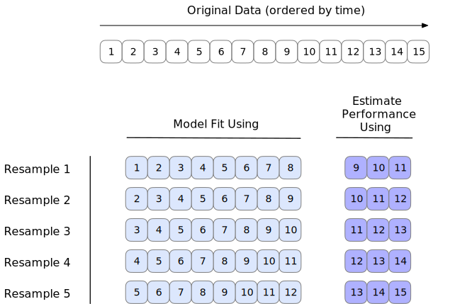
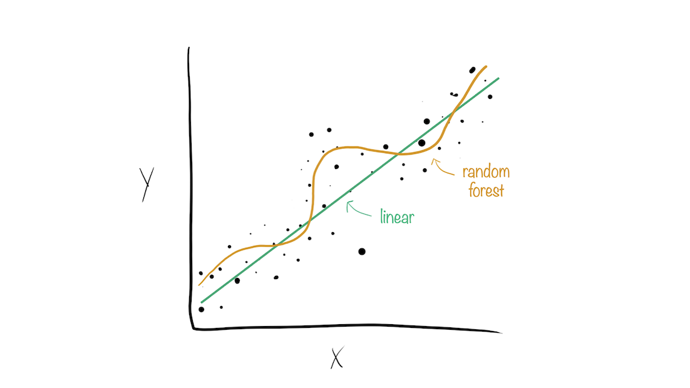

Case Study on Transportation
Machine learning with tidymodels
Chicago L-Train data
Several years worth of pre-pandemic data were assembled to try to predict the daily number of people entering the Clark and Lake elevated (“L”) train station in Chicago.
More information:
Predictors
the 14-day lagged ridership at this and other stations (units: thousands of rides/day)
weather data
home/away game schedules for Chicago teams
the date
The data are in modeldata. See ?Chicago.
Your turn: Explore the Data
Take a look at these data for a few minutes and see if you can find any interesting characteristics in the predictors or the outcome.
library (tidymodels)library (rules)data ("Chicago" )dim (Chicago)#> [1] 5698 50 #> [1] "Austin" "Quincy_Wells" "Belmont" "Archer_35th" #> [5] "Oak_Park" "Western" "Clark_Lake" "Clinton" #> [9] "Merchandise_Mart" "Irving_Park" "Washington_Wells" "Harlem" #> [13] "Monroe" "Polk" "Ashland" "Kedzie" #> [17] "Addison" "Jefferson_Park" "Montrose" "California"
Splitting with Chicago data
Let’s put the last two weeks of data into the test set. initial_time_split() can be used for this purpose:
data (Chicago)<- initial_time_split (Chicago, prop = 1 - (14 / nrow (Chicago)))#> <Training/Testing/Total> #> <5684/14/5698> <- training (chi_split)<- testing (chi_split)## training nrow (chi_train)#> [1] 5684 ## testing nrow (chi_test)#> [1] 14
Time series resampling
Our Chicago data is over time. Regular cross-validation, which uses random sampling, may not be the best idea.
We can emulate our training/test split by making similar resamples.
Fold 1: Take the first X years of data as the analysis set, the next 2 weeks as the assessment set.
Fold 2: Take the first X years + 2 weeks of data as the analysis set, the next 2 weeks as the assessment set.
and so on
Rolling forecast origin resampling

This image shows overlapping assessment sets. We will use non-overlapping data but it could be done wither way.
Times series resampling
<- %>% sliding_period (index = "date" ,
Use the date column to find the date data.
Times series resampling
<- %>% sliding_period (index = "date" , period = "week" ,
Our units will be weeks.
Times series resampling
<- %>% sliding_period (index = "date" , period = "week" ,lookback = 52 * 15
Every analysis set has 15 years of data
Times series resampling
<- %>% sliding_period (index = "date" , period = "week" ,lookback = 52 * 15 ,assess_stop = 2 ,
Every assessment set has 2 weeks of data
Times series resampling
<- %>% sliding_period (index = "date" , period = "week" ,lookback = 52 * 15 ,assess_stop = 2 ,step = 2
Increment by 2 weeks so that there are no overlapping assessment sets.
$ splits[[1 ]] %>% assessment () %>% pluck ("date" ) %>% range ()#> [1] "2016-01-07" "2016-01-20" $ splits[[2 ]] %>% assessment () %>% pluck ("date" ) %>% range ()#> [1] "2016-01-21" "2016-02-03"
Our resampling object
#> # Sliding period resampling #> # A tibble: 16 × 2 #> splits id #> <list> <chr> #> 1 <split [5463/14]> Slice01 #> 2 <split [5467/14]> Slice02 #> 3 <split [5467/14]> Slice03 #> 4 <split [5467/14]> Slice04 #> 5 <split [5467/14]> Slice05 #> 6 <split [5467/14]> Slice06 #> 7 <split [5467/14]> Slice07 #> 8 <split [5467/14]> Slice08 #> 9 <split [5467/14]> Slice09 #> 10 <split [5467/14]> Slice10 #> 11 <split [5467/14]> Slice11 #> 12 <split [5467/14]> Slice12 #> 13 <split [5467/14]> Slice13 #> 14 <split [5467/14]> Slice14 #> 15 <split [5467/14]> Slice15 #> 16 <split [5467/11]> Slice16
We will fit 16 models on 16 slightly different analysis sets.
Each will produce a separate performance metrics.
We will average the 16 metrics to get the resampling estimate of that statistic.
Feature engineering with recipes
<- recipe (ridership ~ ., data = chi_train)
Based on the formula, the function assigns columns to roles of “outcome” or “predictor”
A recipe
summary (chi_rec)#> # A tibble: 50 × 4 #> variable type role source #> <chr> <list> <chr> <chr> #> 1 Austin <chr [2]> predictor original #> 2 Quincy_Wells <chr [2]> predictor original #> 3 Belmont <chr [2]> predictor original #> 4 Archer_35th <chr [2]> predictor original #> 5 Oak_Park <chr [2]> predictor original #> 6 Western <chr [2]> predictor original #> 7 Clark_Lake <chr [2]> predictor original #> 8 Clinton <chr [2]> predictor original #> 9 Merchandise_Mart <chr [2]> predictor original #> 10 Irving_Park <chr [2]> predictor original #> # ℹ 40 more rows
A recipe - work with dates
<- recipe (ridership ~ ., data = chi_train) %>% step_date (date, features = c ("dow" , "month" , "year" ))
This creates three new columns in the data based on the date. Note that the day-of-the-week column is a factor.
A recipe - work with dates
<- recipe (ridership ~ ., data = chi_train) %>% step_date (date, features = c ("dow" , "month" , "year" )) %>% step_holiday (date)
Add indicators for major holidays. Specific holidays, especially those non-USA, can also be generated.
At this point, we don’t need date anymore. Instead of deleting it (there is a step for that) we will change its role to be an identification variable.
We might want to change the role (instead of removing the column) because it will stay in the data set (even when resampled) and might be useful for diagnosing issues.
A recipe - work with dates
<- recipe (ridership ~ ., data = chi_train) %>% step_date (date, features = c ("dow" , "month" , "year" )) %>% step_holiday (date) %>% update_role (date, new_role = "id" ) %>% update_role_requirements (role = "id" , bake = TRUE )
date is still in the data set but tidymodels knows not to treat it as an analysis column.
update_role_requirements() is needed to make sure that this column is required when making new data points.
A recipe - remove constant columns
<- recipe (ridership ~ ., data = chi_train) %>% step_date (date, features = c ("dow" , "month" , "year" )) %>% step_holiday (date) %>% update_role (date, new_role = "id" ) %>% update_role_requirements (role = "id" , bake = TRUE ) %>% step_zv (all_nominal_predictors ())
A recipe - handle correlations
The station columns have a very high degree of correlation.
We might want to decorrelated them with principle component analysis to help the model fits go more easily.
The vector stations contains all station names and can be used to identify all the relevant columns.
<- %>% step_normalize (all_of (!! stations)) %>% step_pca (all_of (!! stations), num_comp = tune ())
We’ll tune the number of PCA components for (default) values of one to four.
Process them on the resamples
# Set up some objects for stacking ensembles (in a few slides) <- control_grid (save_pred = TRUE , save_workflow = TRUE )<- %>% workflow_map (resamples = chi_rs,grid = 10 ,control = grid_ctrl,verbose = TRUE ,seed = 12
How do the results look?
rank_results (chi_res)#> # A tibble: 31 × 9 #> wflow_id .config .metric mean std_err n preprocessor model rank #> <chr> <chr> <chr> <dbl> <dbl> <int> <chr> <chr> <int> #> 1 pca_cubist Preprocessor1_Model1 mae 0.798 0.104 16 recipe cubis… 1 #> 2 pca_cubist Preprocessor3_Model3 mae 0.978 0.110 16 recipe cubis… 2 #> 3 pca_cubist Preprocessor4_Model2 mae 0.983 0.122 16 recipe cubis… 3 #> 4 pca_cubist Preprocessor4_Model1 mae 0.991 0.127 16 recipe cubis… 4 #> 5 pca_cubist Preprocessor3_Model2 mae 0.991 0.113 16 recipe cubis… 5 #> 6 pca_cubist Preprocessor2_Model2 mae 1.02 0.118 16 recipe cubis… 6 #> 7 pca_cubist Preprocessor1_Model3 mae 1.05 0.134 16 recipe cubis… 7 #> 8 basic_cubist Preprocessor1_Model8 mae 1.07 0.115 16 recipe cubis… 8 #> 9 basic_cubist Preprocessor1_Model7 mae 1.07 0.112 16 recipe cubis… 9 #> 10 basic_cubist Preprocessor1_Model6 mae 1.07 0.114 16 recipe cubis… 10 #> # ℹ 21 more rows
Plot the results
Pull out specific results
We can also pull out the specific tuning results and look at them:
%>% extract_workflow_set_result ("pca_cubist" ) %>% autoplot ()
Why choose just one final_fit?
Model stacks generate predictions that are informed by several models.
Why choose just one final_fit?
Why choose just one final_fit?
Why choose just one final_fit?

Why choose just one final_fit?
Why choose just one final_fit?
Building a model stack
Define candidate members
Initialize a data stack object
Add candidate ensemble members to the data stack
Evaluate how to combine their predictions
Fit candidate ensemble members with non-zero stacking coefficients
Predict on new data!
Start the stack and add members
Collect all of the resampling results for all model configurations.
<- stacks () %>% add_candidates (chi_res)
Estimate weights for each candidate
Which configurations should be retained? Uses a penalized linear model:
set.seed (122 )<- blend_predictions (chi_stack)#> # A tibble: 5 × 3 #> member type weight #> <chr> <chr> <dbl> #> 1 pca_cubist_1_1 cubist_rules 0.343 #> 2 pca_cubist_3_2 cubist_rules 0.236 #> 3 basic_cubist_1_4 cubist_rules 0.189 #> 4 pca_lm_4_1 linear_reg 0.163 #> 5 pca_cubist_3_3 cubist_rules 0.109
How did it do?
The overall results of the penalized model:
What does it use?
autoplot (chi_stack_res, type = "weights" )
Fit the required candidate models
For each model we retain in the stack, we need their model fit on the entire training set.
<- fit_members (chi_stack_res)
The test set: best Cubist model
We can pull out the results and the workflow to fit the single best cubist model.
<- %>% extract_workflow_set_result ("pca_cubist" ) %>% select_best ()<- %>% extract_workflow ("pca_cubist" ) %>% finalize_workflow (best_cubist) %>% last_fit (split = chi_split, metrics = metric_set (mae))
The test set: stack ensemble
We don’t have last_fit() for stacks (yet) so we manually make predictions.
<- predict (chi_stack_res, chi_test) %>% bind_cols (chi_test)
Compare the results
Single best versus the stack:
collect_metrics (cubist_res)#> # A tibble: 1 × 4 #> .metric .estimator .estimate .config #> <chr> <chr> <dbl> <chr> #> 1 mae standard 0.670 Preprocessor1_Model1 %>% mae (ridership, .pred)#> # A tibble: 1 × 3 #> .metric .estimator .estimate #> <chr> <chr> <dbl> #> 1 mae standard 0.689
Plot the test set
library (probably)%>% collect_predictions () %>% ggplot (aes (ridership, .pred)) + geom_point (alpha = 1 / 2 ) + geom_abline (lty = 2 , col = "green" ) + coord_obs_pred ()